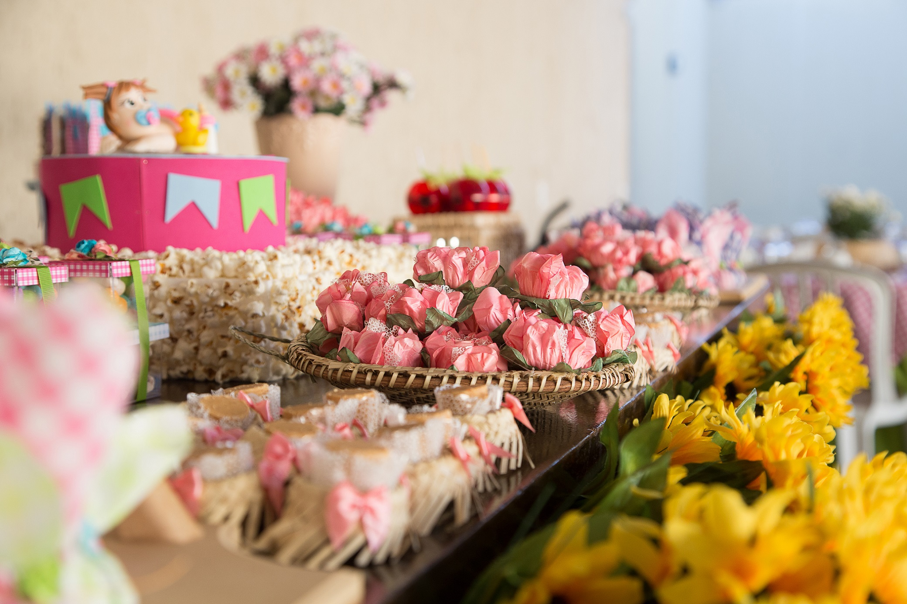
Quem Somos
Com as lentes do coração, fotografar é guardar momentos para a eternidade
Apaixonada pela arte de guardar o tempo em momentos, posições, formas, focos e ângulos, faço do meu trabalho de fotógrafa a inspiração para registrar os melhores momentos da vida, que para sempre poderão ser revividos com grandes emoções.
Fotografar a leveza e a ingenuidade da crinça é a minha maior paixão. Quando elas estão no seu melhor momento de euforia e satisfação é a oportunidade ideal de capturar os sentimentos que farão relembrar os tempos felizes de suas vidas.
Especialista em fotografar festas e albuns infantis, também trabalho com Fotografia Gestante, Books, Infantil e Still.
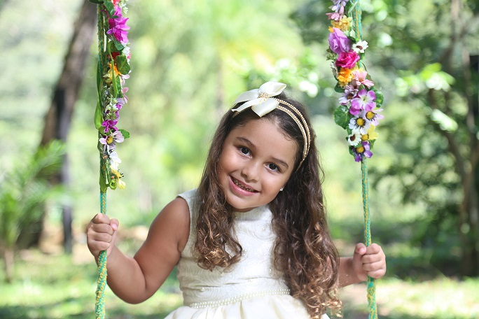
O que Dizem
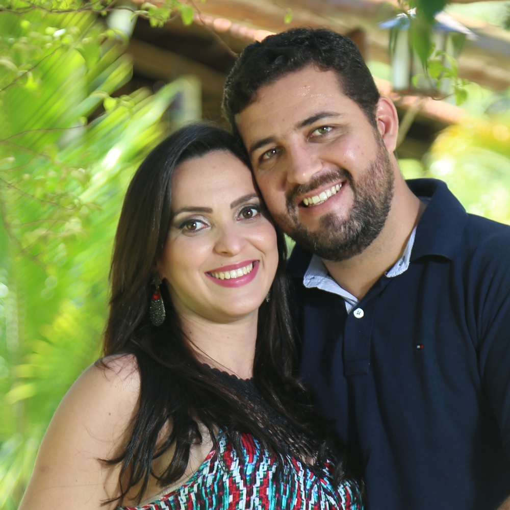
Acredito que a Danielle é o tipo de profissional que nem precisa de indicações,
basta olhar o trabalho dela para se apaixonar...sem duvidas nossa melhor decisão foi escolher um bom
profissional para fotos, essas serão nossas recordações desse dia especial...ela sem duvidas
consegue captar esses momentos de uma forma única e especial, tornando cada momento ainda mais mágico
através das suas fotos. Super recomendo, para quem quer algo que realmente surpreenda, a Danielle é
maravilhosa!
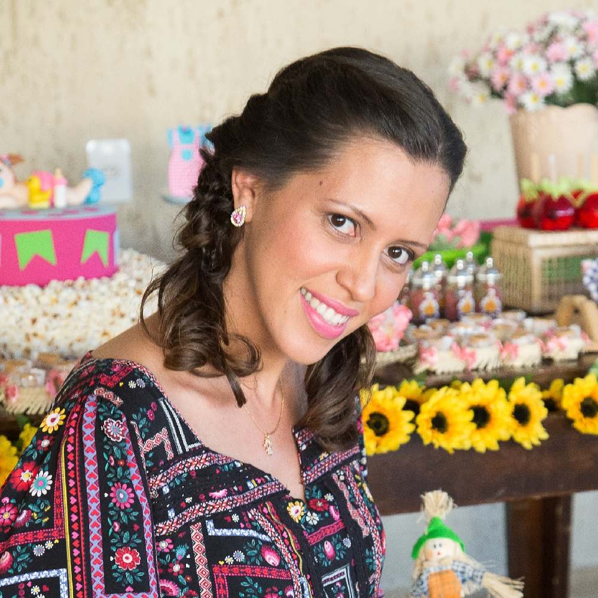
Um trabalho delicado, criativo e muito profissional. Minhas experiências,
como cliente e mãe foram demais. Na hora das fotos, você preza não só o conforto e segurança dos
bebês mas também o bem estar das mamães!
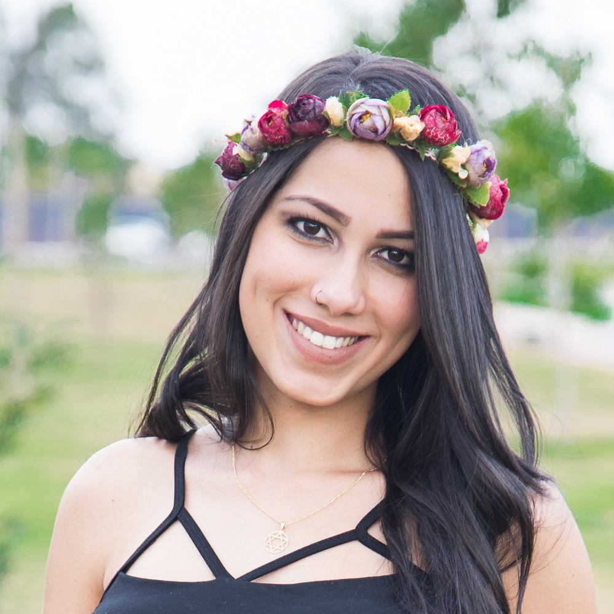
Você registrou os momentos mais especiais da minha vida, e fez deles
ainda mais incríveis! Minha gravidez, primeiros dias, primeiros meses, batizado, e que assim
continue por muito tempo, registrando lindamente as fases do meu pequeno.
Galeria
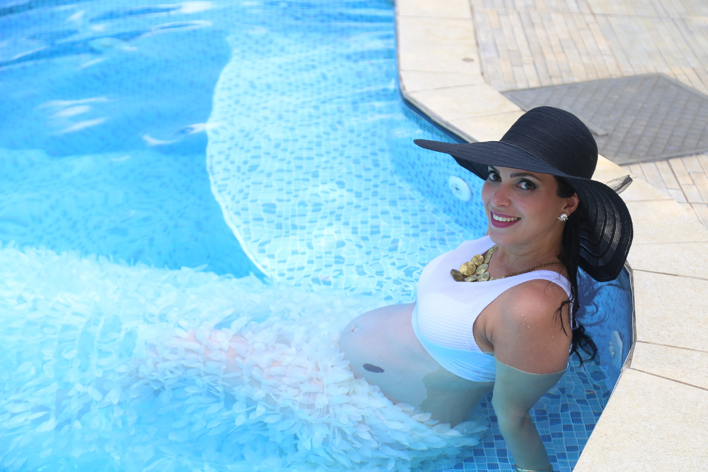
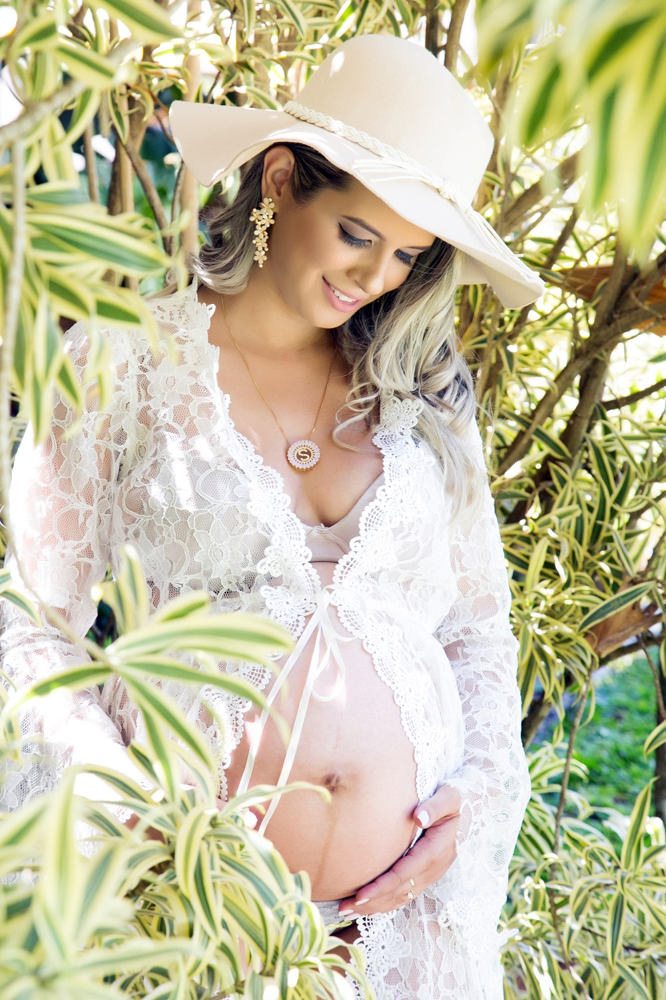
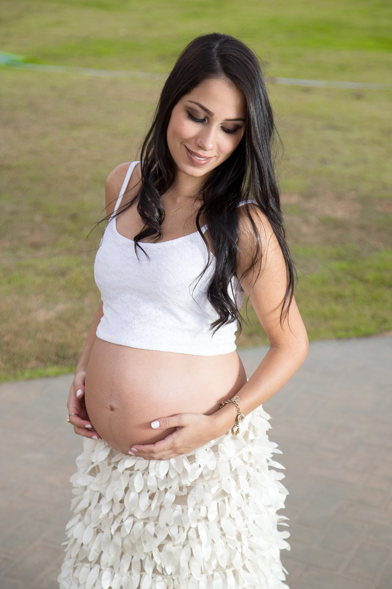
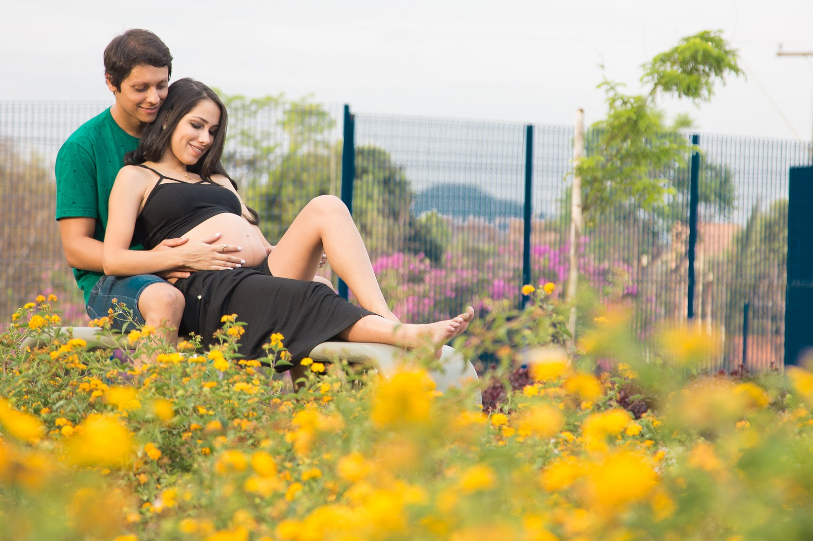
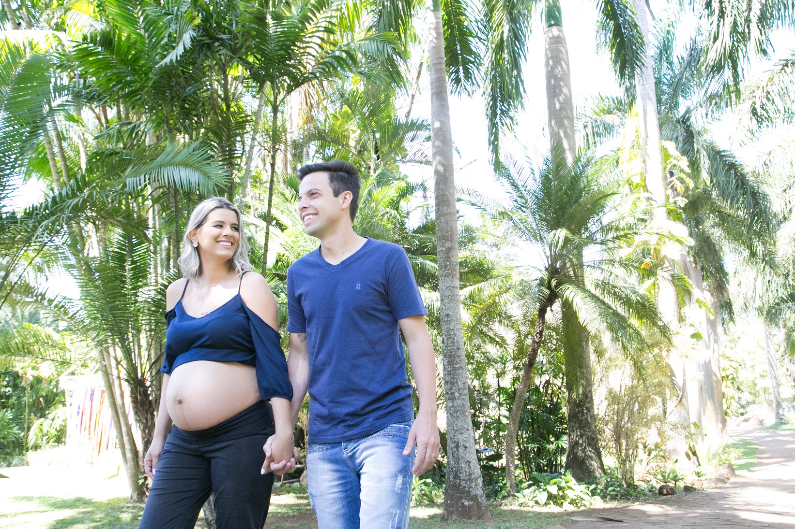
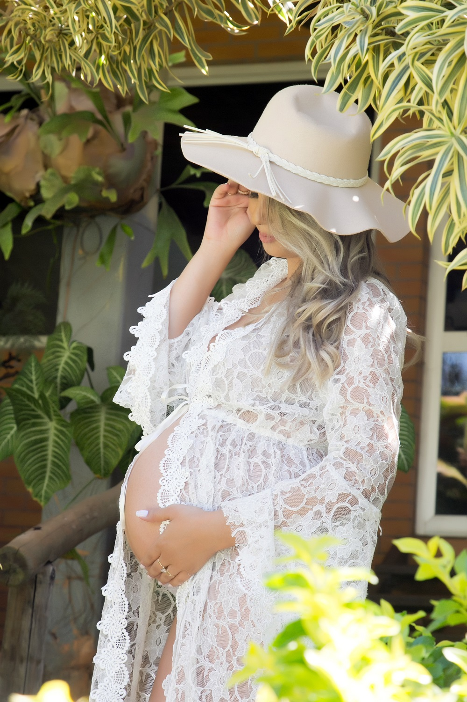
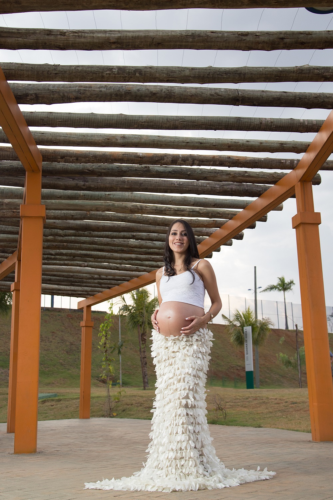
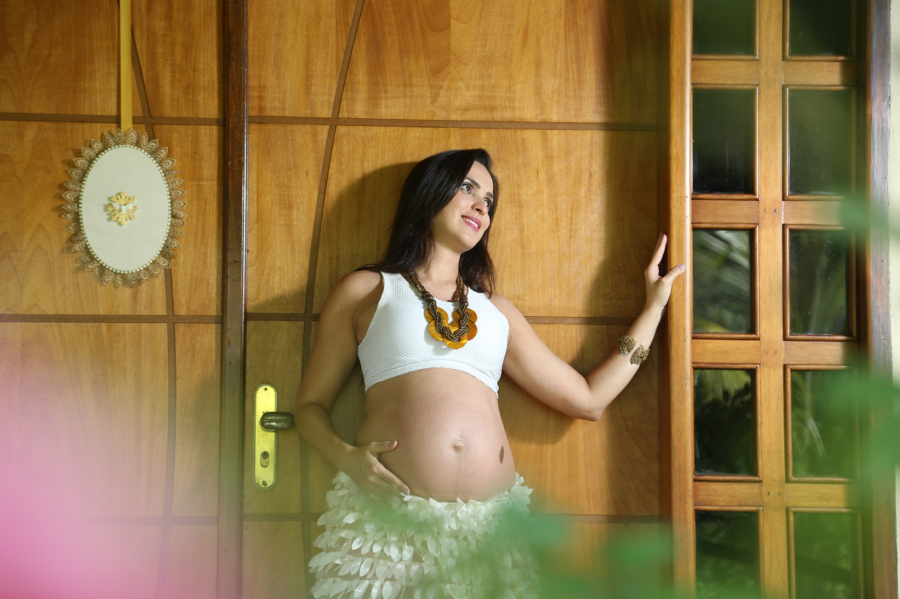
INSTAGRAM@DANIDIASFOTO
Contato
Vamos entrar em contato! Me mande uma mensagem ou me ligue:
Goiânia, BR
Fone: +55 62 98113 2391
Email: danielledias10@gmail.com
Endereço: Av. T-2, 1.810, Galeria Via Las Palmas, Setor Bueno, 74215-010